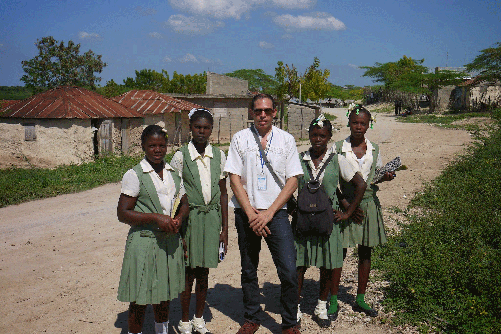
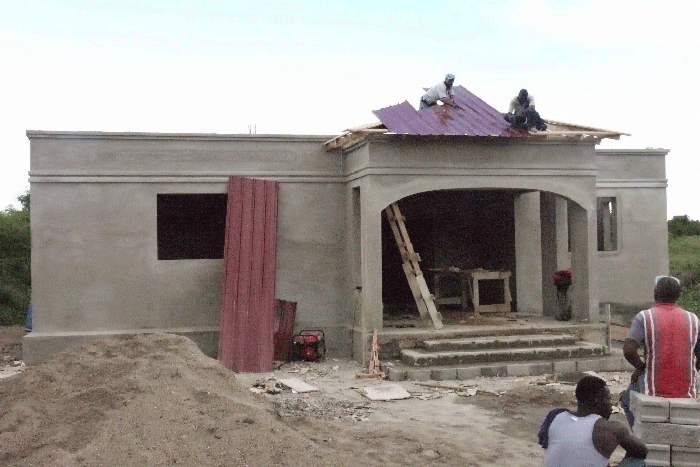
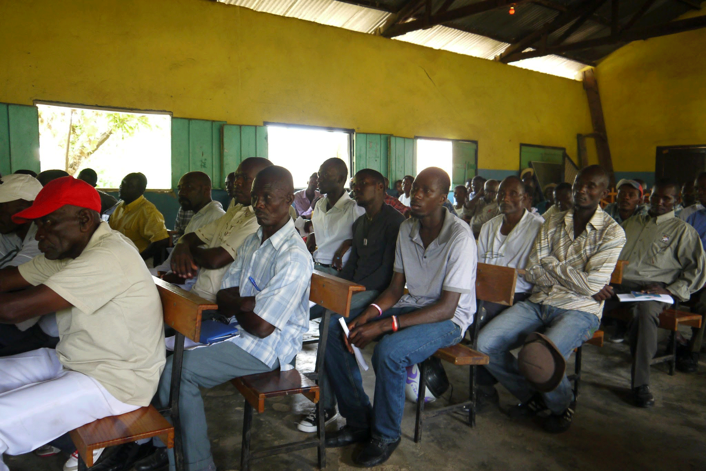

Our Projects

Gender Equality
Eccopoli is integrated at the community level to mediate in the resolution of conflicts between members of different genders to reach viable agreements.

Sustainable Development
Eccopoli intends to carry out high impact projects at the community level to improve the lives of community members where it is most needed.

Sustainable Development
Eccopoli enters these communities and identifies the most needed projects through community meetings. Using different types of financing and donation mechanisms.

Rule of Law / Human Rights
For Eccopoli, Human Rights cannot be enforced unless there is a solid rule of law in the communities of the countries where we work.

Sustainable Development
Eccopoli seeks to execute projects to improve the situation in a sustainable way at the community level.